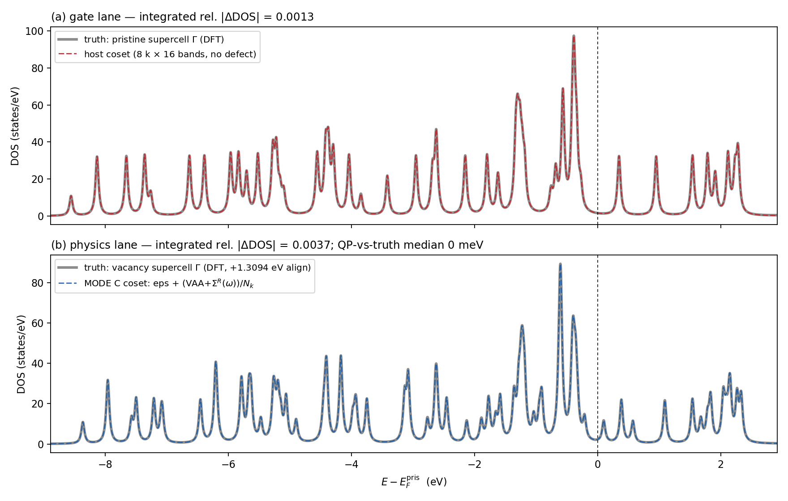
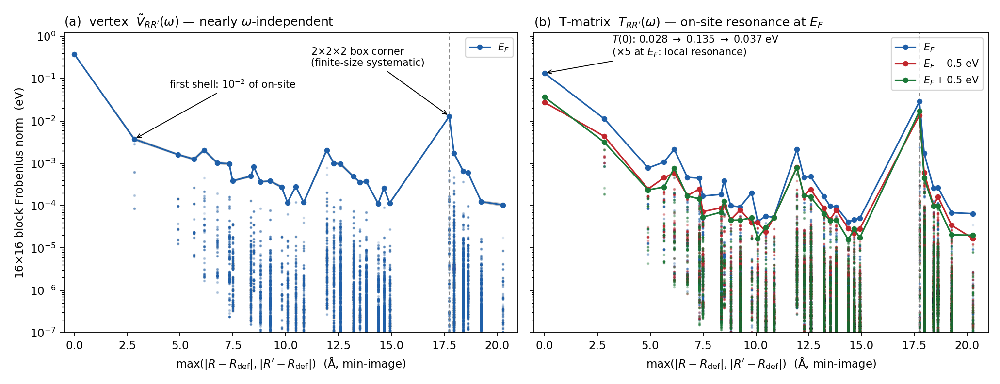
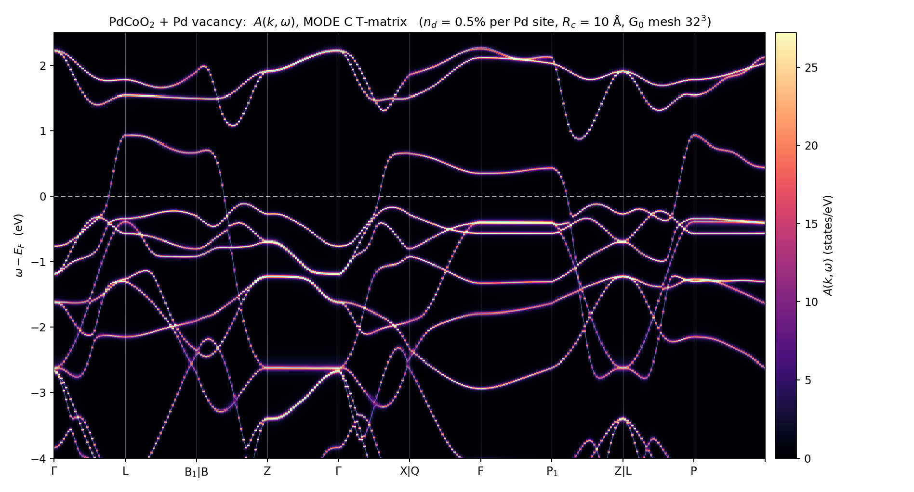
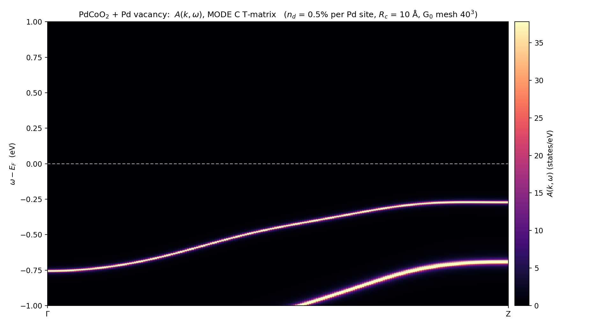
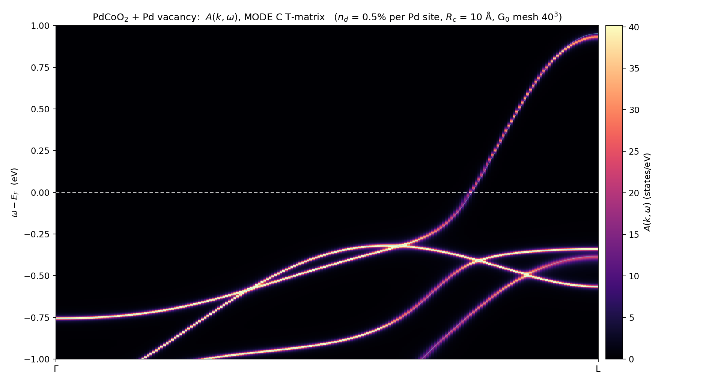
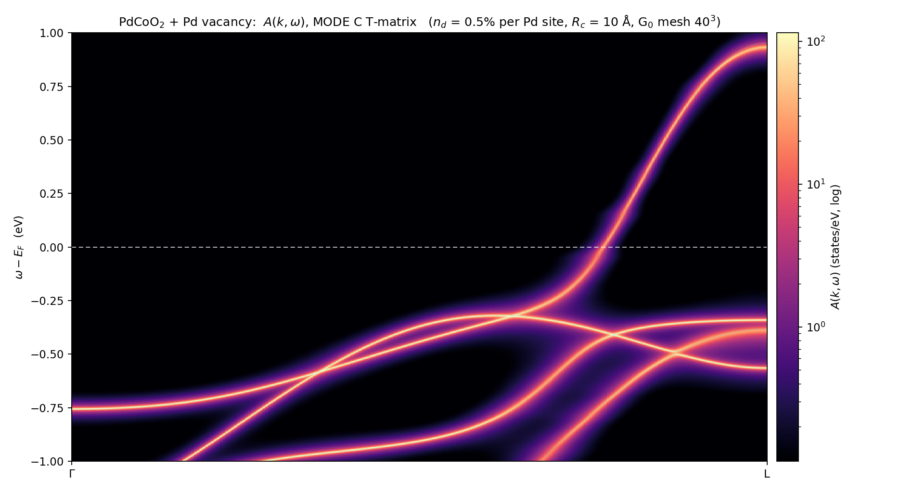
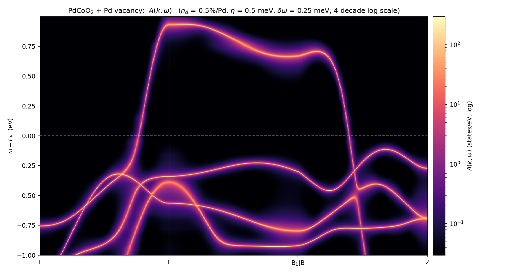
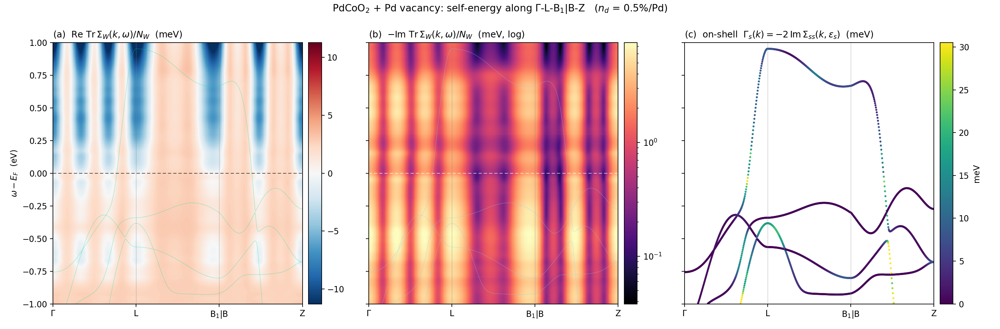
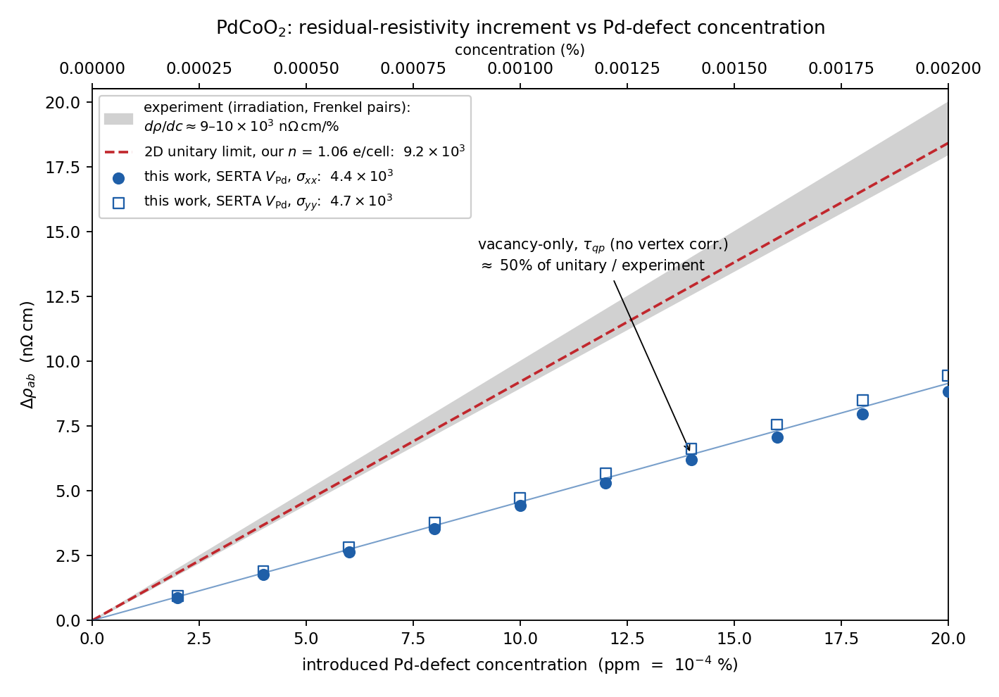

Contents
This page is the complete record of the first time the EDT pipeline ran a three-dimensional system: every MoS$_2$ production run had
nk3 = 1(two-dimensional with vacuum), and switching to the bulk metal PdCoO$_2$ immediately made a never-exercised code path fail. Diagnosis, fix (qe-edt v2.2) and end-to-end validation were all done on a 2×2×2 reproducer. Host and structural background are on the PdCoO$_2$ bands page; the defect is an ideal Pd vacancy (unrelaxed, neutral).
1. Why a 2×2×2 coset comparison is ground truth, not an approximation
Taking the host $k$ mesh to be the same size as the supercell ($2^3$) makes the periodic-array branch be the vacancy supercell itself: one defect in the box plus its periodic images is exactly that 31-atom supercell problem, and the chain's $\Sigma^R(\omega)$ brings in the plane-wave complement completely. So the coset assembly
(128 dimensions = 8 cosets × 16 bands) must reproduce the DFT spectrum of the vacancy supercell at $\Gamma$ level by level — with no adjustable parameter, the only constant being the core alignment shift (see §2). This is the same validation ladder as MoS$_2$'s "coset decomposition = periodic-array branch comparable to supercell truth", walked again in three dimensions.
2. The pipeline and its gates, stage by stage
| step | key points | gate (measured) |
|---|---|---|
| supercell SCF | 2×2×2 rhombohedral (32/31 atoms), FFT forced to $150^3=2\times75^3$; metallic supercells need local-TF mixing (Broyden $\beta=0.3$ oscillates and fails to converge around 0.6 Ry) | the perfect supercell's total energy per f.u. agrees with an independent primitive-cell calculation to $1\times10^{-8}$ Ry; the vacancy cell retains all 12 symmetry operations (Pd sits at 3a, so the site group = the crystal point group $D_{3d}$) |
| $\Delta V$ | extract_pot.x (ityp-column convention + 8 digits; stock pp.x writes a Z column with 5) | peak 310.8 eV, five orders of magnitude of decay within 4 Å, cell-boundary rms 6 meV (0.002% of peak) — metallic screening, no long-range tail |
| alignment | no vacuum in 3D, so pot_align='core' (a solid-sphere average on the farthest atom) | agrees with an independent "outermost-shell mean" method to 8 meV (1.309 vs 1.317 eV) |
| born block | EDT self-contained (born_only), all bands 1–40 | Hermiticity $1.3\times10^{-15}$, consistent across all $q_3$ classes; an independent plane-wave integrator arbitrates element by element: the three permutation-symmetric $q$ channels agree in their ratios to 7 digits, and the residual 8–12% is exactly the KB nonlocal part the integrator deliberately omits |
| MODE C chain | edt_r42q3.x, svd_tol=0, 16 blocks | operator self-check $1.9\times10^{-14}$; herm($A$) $1.5\times10^{-11}$ on the first step and $\sim6\times10^{-15}$ thereafter; chains from the col and legacy folds have bit-identical VAA and relative $A/B$ block differences $\le1.2\times10^{-8}$ |
How the alignment constant enters the spectrum: EDT's $\Delta V$ carries a shift $=\langle V_p\rangle_{\rm core}-\langle V_d\rangle_{\rm core} =+0.0962$ Ry, so the coset spectrum sits on the absolute energy scale of the perfect lattice, and the comparison shifts the vacancy-supercell ground truth bodily by $+1.3094$ eV — not a fitting parameter, but a number the pipeline prints itself.
3. Results: DOS comparison in two lanes

(a) Gate lane (no defect): the pure host coset (8 $k$ × 16 bands of broadened $\varepsilon_a$) reconciled against the DFT spectrum of the perfect supercell at $\Gamma$. This lane contains no physics — it only tests the folding identity and the consistency of two independent SCF runs, and it establishes the noise floor of the comparison method: integrated relative $|\Delta\mathrm{DOS}|=0.0013$.
(b) Physics lane: the MODE C coset assembly reconciled against the vacancy supercell ground truth at $\Gamma$. The vacancy rearranges the spectrum dramatically (the peak structures of (a) and (b) are visibly different), and yet every peak and every shoulder is reproduced:
| quantity | value |
|---|---|
| integrated relative $|\Delta\mathrm{DOS}|$ | 0.0037 (noise floor 0.0013) |
| QP fixed points vs ground truth (123 pairable) | median 0.1 meV, 90th percentile 0.4 meV |
| number of unpaired levels | 5 = the number of 4d orbitals on the removed Pd (128 host basis states vs 123 ground-truth levels in the window; the vacancy expels 5 d states from the manifold, and the $T$-matrix side expels them too) |
The last row deserves emphasis: the difference in level count equals exactly the number of d orbitals on the removed atom, and both sides agree — direct evidence that the method gets "removing one atom" right, and not merely that it places the surviving states correctly.
4. The 3D bug in fold\_col: symptoms, fingerprint, and three lines of hard evidence
The first 6³ chain run gave herm($A$) $=O(10)$ (it should be machine precision) and an operator self-check of $|{\rm proj}-M|=5.2>|M|=2.9$. On the 2×2×2 reproducer (0.9 s per step) a single-variable comparison ruled possibilities out one at a time: cube provenance (both extract\_pot and pp.x cubes give bit-identical results on all four gates), edmat zero-padding, SVD truncation (still broken at svd_tol=0), and $k$-mesh size (2³ is broken too). Two further steps localized it:
Independent arbitration: a plane-wave integrator written from scratch computed $\langle\psi_{mk_f}|\Delta V|\psi_{nk_i}\rangle$ directly and proved the born path is correct in 3D (ratios = the $N_k$ convention constant, permutation-symmetric channels agreeing to 7 digits) — narrowing suspicion to the chain side.
$q$-block fingerprint: comparing the chain's raw apply_dV output (a chi dump) against born block by block over $(k_f,k_i)$ produced the decisive pattern — exactly 16 blocks with "$q_3=+\tfrac12$ and winding $g_3=0$" are precisely +1.000, and every other block is contaminated (all 8 $k$ of the 2³ mesh are TRIM points and the system has inversion, so the contamination shows up as real-valued ratios). That asymmetric pattern points uniquely at fold\_col's factorization tables:
ALLOCATE(Vq(dffts%nnr, nkstot), phw(dffts%nnr, 4)) ! only 4 winding-phase slots = (g1,g2)
IF (ABS(a1-qw(1))<1.d-6 .AND. ABS(a2-qw(2))<1.d-6) map_iq = kq ! q3 is never checked
map_ip(ik2,kg2) = 1 + (-g1) + 2*(-g2) ! g3 absentThe $q$ match is unguarded and last-writer-wins → every slot in the $(q_1,q_2,\cdot)$ class ends up overwritten by the $q_3{=}\tfrac12$ candidate; and the $g_3=-1$ winding phase $e^{-2\pi iz}$ is missing entirely. MoS$_2$ always has $q_3\equiv0,g_3\equiv0$, so the 2D tables happen to be complete — not carelessness, simply never exercised by three-dimensional data. The fix (qe-edt v2.2): add the third component to the match, extend phw to 8 slots ($G\in\{0,-1\}^3$), and add $4\cdot(-g_3)$ to map_ip. All four gates go green after the fix (§2 table). The legacy mode (fold_col=.false., exact pairwise folding) was independently proven correct in 3D all along ($5\times10^{-14}$) — so production always had a verified fallback path.
5. Lessons accumulated while going three-dimensional
| lesson | in one line |
|---|---|
cubes must come from extract_pot.x | stock pp.x writes the Gaussian standard (a Z column) with only 5 significant digits; the EDI reader expects an ityp column. A Z column makes count_nkb match no species → nkb=0 → ZGEMM with LDC=0 plus an out-of-bounds SIGSEGV |
| band extrema must be measured on a uniform mesh | a high-symmetry path is a set of measure zero in the BZ: band 25's true minimum is 88 meV below its value on the path, enough for a disentanglement frozen window to swallow a second band |
| anchor windows to absolute energies, not to $E_F$ | in a smeared metal, $E_F$ drifts by 50–80 meV with the $k$ mesh while the eigenvalues do not |
| a zero-padded edmat is mathematically exact but blinds the operator self-check | MODE C reads only $V_{AA}$, so the zeros never enter the calculation; but the self-check uses all-band elements as its criterion — feed it a real all-band born before production so that gate has actual data |
use local-TF for metallic supercell SCF | plain Broyden cannot damp the long-wavelength charge sloshing; the primitive cell is too small for it to show |
| herm($A$) is the chain's free hard gate | $A_j=Q_j^\dagger HQ_j$ is Hermitian for any $Q$ — so a departure from machine precision can only mean the operator being applied is itself wrong |
6. Wannier decay validation: the cluster method's licence to operate
Assembling spectral functions puts $T$ on a real-space cluster around the defect, which presupposes that the vertex and $T$ really are localized in the Wannier pair basis. This is measured directly on the complete $6^3$ R mesh (with no truncation at all, so the decay is evidence rather than assumption): rotate $\tilde V(\omega)=(V_{AA}+\Sigma^R(\omega))/N_k$ and $T=\tilde V[1-G_0\tilde V]^{-1}$ into the Wannier gauge, double Fourier transform to the $(R,R')$ pair basis, and bin into shells by minimum-image distance to the defect.

Three convention gates run first (the standard drill learned from MoS$_2$, all decided by the data):
| gate | result |
|---|---|
| u.mat orientation ($U^\dagger\varepsilon U$ vs $U\varepsilon U^\dagger$ against $H_W$) | 2.5e-5 vs 6.1 eV — five orders of magnitude of discriminating power |
| vertex centre self-location (argmax over diagonal blocks) | $(5,5,5)$, agreeing component by component with the structural prediction $-(1,1,1)\bmod 6$ (assertion passes) |
| $\tilde V$ Hermiticity | 5–7e-4 (the normal Im magnitude for a retarded object) |
The centre lands at $-r_{\rm def}$ rather than $+r_{\rm def}$ as a consequence of the Fourier phase convention ($V(k,k')\sim e^{-i(k-k')\cdot r_{\rm def}}$); and the old lesson that "the WS origin must be taken at the defect position" played out yet again here: the rhombohedral cell is extremely elongated ($\alpha=26.7^\circ$, $|a_1{+}a_2{+}a_3|=c_{\rm hex}=17.74$ Å), and a first version of the script used $(0,0,0)$ as the origin, labelling the true defect site (0.38 eV) as "a 29× spike at the farthest distance". The origin must be read from the structure and confirmed by the data — neither alone is enough.
6a. Three conclusions
- Locality holds: $V(0)=0.38$ eV → first shell (2.83 Å) 1% → beyond 10 Å ~0.03%, with two orders of magnitude of decay happening within the first shell; $T$'s decay follows $V$'s ($T=V+VG_0V+\cdots$ has both legs of every term pinned to $V$'s support, and the data confirms that argument).
- One quantified systematic: the "rise" at the unrolled label of 17.74 Å is the corner tile of the $2\times2\times2$ cube — under supercell periodic wrapping it is physically only ~6.8 Å from the defect, and the isolated-box transform places that weight at the unrolled position. In absolute terms $V$ ~1.3e-2 and $T$ ~0.02 eV, barely moving with $\omega$. This is the fingerprint of a finite supercell, and the only way to suppress it is a $3\times3\times3$ cube (inputs already on disk).
- A physical prediction: a local resonance at $E_F$. $T$'s defect-site norm goes $0.028\to\mathbf{0.135}\to0.037$ eV ($E_F\pm0.5$ eV against $E_F$, a factor ×5), while $V$ barely changes with $\omega$ (0.37–0.38) — the enhancement comes entirely from multiple scattering $[1-G_0V]^{-1}$, and only at the defect site. The Pd vacancy has a resonance near $E_F$, which will be directly visible in the spectral function and in transport (a strongly energy-dependent scattering rate).
7. Spectral functions: $A(k,\omega)$ along the band path
The pipeline's terminus. $T$ is assembled directly in the Wannier pair basis ($R_c=10$ Å cluster, 97 site images / 1552 dimensions, with $G_0$ interpolated from hr.dat onto a $32^3$ dense mesh and GEMM'd over 595 unique $\Delta R$ — structurally the same as MoS$_2$'s kubo/kpath code), and then
7a. Gate 0: an algebraic identity, before any physics
With an all-sites cluster and a $G_0$ on the same $6^3$ mesh as the chain, the cluster route and the direct band-basis formula are the same linear algebra — so the per-$k$ block ratio must be a flat constant, and the constant has a predicted value of $N_k$. Measured:
During debugging this gate caught three independent convention errors (mixed bases in the comparison route; the sign of the $\Sigma(k)$ contraction phase; and the $G_0$ phase orientation — the last exact at first order and drifting from second, localized by bisecting order by order). Each of them would have made the spectral function quietly wrong while looking fine on the plot; now every convention is decided by the identity and the normalization asserted against a predicted value.
7b. Results

The host bands (thin lines) coincide point by point with the ridges of spectral intensity, and the broadening concentrates where bands cross $E_F$ — the same Pd band is as sharp as ever a few hundred meV away, the spectroscopic fingerprint of the $E_F$ resonance (§6a). Quantitatively (at $n_d=0.5\%$ per Pd site):
| quantity | value |
|---|---|
| $\Gamma(E_F)$ (three Fermi crossings) | median 23.9 meV (18.8–25.1) |
| $\tau=\hbar/\Gamma$ | 27 fs |
| $\ell=v_F\tau$ ($v_F\sim7.5\times10^5$ m/s) | ~20 nm |
The Pd vacancy is a resonantly enhanced strong scatterer: 0.5% vacancies knock this famously long-mean-free-path material down to $\ell\sim20$ nm — qualitatively consistent with the experimental consensus that PdCoO$_2$'s extreme conductivity depends on the Pd layers being nearly defect-free. $\Gamma\propto n_d$, so other concentrations scale linearly; the full $\Sigma_W/n_d$ is stored (pd_spec_sig.npz) and replotting at a new concentration takes about a minute.
7c. A $E_F\pm1$ eV zoom on Γ→Z: the $c$ axis carries no Fermi crossing

Focusing on $(E_F-1,E_F+1)$ eV along Γ→Z alone (the interlayer / $c$-axis direction; 201 points, $\omega$ step 2.5 meV, $\eta=5$ meV, $G_0$ mesh refined to $40^3$). The result is itself a physical statement:
- No band in this segment crosses $E_F$ — the conduction band rises from $-0.76$ to $-0.27$ eV along Γ→Z (its minimum lying exactly at Γ), and the upper half of the window is empty. This is the spectroscopic version of quasi-two-dimensionality: the Fermi surface is a hexagonal cylinder perpendicular to $c$, and every $E_F$ crossing happens in in-plane directions (near Γ-L, X|Q and P in the full-path figure).
- The bands are sharp throughout this segment — they sit at $\omega\approx-0.3\ldots-0.8$ eV, far from $T(\omega)$'s $E_F$ resonance, and pick up only a small off-shell broadening. This mutually corroborates the "broadening concentrates at $E_F$ crossings" of the full-path figure: the energy selectivity of resonant scattering, read off two orthogonal cuts through the same $\Sigma_W(k,\omega)$ data.
Technical note: the $40^3$ uniform mesh for $G_0$ is the quadrature grid for the host propagator's BZ integral ($T$'s multiple-scattering closure runs through intermediate states over the whole BZ), not an interpolation — $H_W(k)$ and $\Sigma_W(k,\omega)$ are themselves evaluated directly at the path $k$ with no mesh needed.
7d. A $E_F\pm1$ eV zoom on Γ→L: the resonance's energy selectivity, read off a single band

Same parameters as 7c, moved to an in-plane segment that does have a Fermi crossing (RHL1's $L=(\tfrac12,0,0)$; the location of the first crossing in the full-path figure). Three readings:
- The steep Pd conduction band dims and broadens where it crosses $E_F$: within an $E_F\pm0.15$ eV window the spectral peak drops from ~40 to ~15 states/eV ($A_{\rm peak}\propto1/\Gamma$, so an enhanced $\Gamma$ in the resonance region collapses the peak height), and the same band recovers its sharpness immediately outside the window — the energy selectivity of the $T(\omega)$ resonance (§6a's ×5) read at a glance off one band;
- $\Gamma(E_F)$ = median 17.0 meV (16.2–17.5 over 4 crossing states; with a 2.5 meV $\omega$ mesh and $40^3$ $G_0$, i.e. finer resolution than the full-path run) → $\tau\approx39$ fs at 0.5% vacancies;
- The scattering rate is ~40% anisotropic around the Fermi surface: 17 meV in this segment versus ~24 meV at the other crossings of the full path — Fermi-surface states at different $k$ couple to the defect resonance with different strength. This is a substantive input for transport: an anisotropic $\tau(k)$ means SERTA and the full solution (with vertex corrections / IBTE) will differ measurably.
7e. High-resolution version (601 k × 2001 $\omega$, $\eta=2$ meV)

After refining 7d's resolution across the board (3× the k points, a 1 meV $\omega$ step, display $\eta$ reduced to 2 meV so the intrinsic linewidth completely dominates; logarithmic colour scale, spanning three decades):
- The resonance window takes clear shape: spectral peaks are dim inside $\omega\in(-0.1,+0.2)$ eV and recover to hairline sharpness outside — the energy selectivity becomes an incontestable feature of the figure;
- The linewidth reading has converged: the HD run's 12 crossing states give a median $\Gamma(E_F)$ of 17.01 meV, agreeing to the digit with the low-resolution version's 16.99 (4 states, $\eta=5$ meV) — converged with respect to k/ω resolution and to $\eta$, so this is a citable number;
- the avoided crossing at $-0.3\ldots-0.5$ eV is fully resolved on the 1 meV mesh;
- on a log scale the Lorentzian tails of the resonance window are fully visible (the diffuse halo around the crossings) — the lineshape itself, not just the peak position, becomes a readable object.
(The full $\Sigma_W/n_d$ for 601×2001 is on disk, so replotting at a different defect concentration takes seconds. ω-parallel over 6 workers, 39 minutes.)
7f. A three-segment HD zoom (Γ→L→B$_1$|B→Z): broadening does not only happen at $E_F$

The same HD parameters laid over three path segments (602 k; the display layer is reassembled from the stored $\Sigma$ with zero recomputation: $\Sigma$ is smooth in $\omega$, so linear interpolation from the 1 meV mesh to 0.25 meV is exact — $\eta$ is lowered to 0.5 meV, already below the figure's pixel width, so the intrinsic linewidth dominates every visible structure; the colour scale spans 4 decades, showing sharp-band peaks above 200 states/eV and the ~0.1 resonance halo in the same figure):
- Two steep Fermi crossings (one each in the Γ-L and B-Z segments), with visibly different Lorentzian halo sizes at the two — the 7 crossing states of these segments give a median $\Gamma(E_F)$ of 16.2 with a range of 12.6–17.5 meV; combined with the other crossings on the full path (~24–25 meV), that is a factor-of-about-2 anisotropy in the Fermi-surface scattering rate;
- The most striking new feature: a large diffuse halo at the flat-band top around $-0.4$ eV near L (with comparable broadening also visible on the $+0.7$ eV band between L and B$_1$). Mechanism: $\mathrm{Im}\,\Sigma(\omega)$ tracks both the resonance ($E_F$, §6a) and peaks in the host density of states — final-state phase space is large at van Hove points and band extrema, so a large $\Gamma$ is picked up even away from the resonance window. On a linear colour scale this is nearly invisible; a log scale promotes the lineshape to a first-class citizen;
- spectral structure joins almost seamlessly across the B$_1$|B break (the two points are symmetry-equivalent) — another self-verification of the assembly's phase conventions.
On whether artificial broadening is still needed (the basis for this figure's $\eta=0.5$ meV): a metallic host makes $\mathrm{Im}\,\Sigma$ finite everywhere (on-shell $\Gamma$ has a minimum of 0.01 meV but is nonzero), so the display $\eta$ can in principle go to zero, and in practice is bounded by the pixel width (a ±1 eV window is ≈ 2 meV/pixel, and a smaller $\eta$ would merely undersample). The one genuinely artificial parameter left in the pipeline is $G_0$'s $\eta_{G_0}=25$ meV — a regularization of the BZ integral on a discrete mesh, which can only be converged together with the mesh (a $64^3+10$ meV convergence check is on the to-do stack); the chain CF's $\eta$ is harmless because the rest space sits far away at $+3.2$ eV.
7g. Self-energy maps: $\mathrm{Re}/\mathrm{Im}\,\Sigma(k,\omega)$ and the on-shell linewidth

Same path and energy window as 7f, plotted directly from the stored $\Sigma_W(k,\omega)$ (zero recomputation):
- (a) Re and (b) Im are a Kramers–Kronig self-check on each other: Re Tr$\,\Sigma$ is weakly positive below $E_F$ and strongly negative above — the sign flips exactly at the resonance, which is precisely the analytic requirement that Re change sign across the $E_F$ resonance peak in (b);
- the product structure of (b) is directly visible: a horizontal bright band ($-0.35\ldots-0.8$ eV, where the host DOS is large) × a vertical k modulation (the phase form factor) — $\mathrm{Im}\,\Sigma=$ resonance(ω) × DOS(ω) × k form factor;
- (c) the on-shell $\Gamma_s(k)$ coloured onto the bands (0.01–41.5 meV, a state selectivity spanning three decades): deep on the steep Pd band ($-0.5\ldots-1$ eV) 30–40 meV, ~17 at the $E_F$ crossings, ~10 above; ~15–20 at the L-point flat-band top (7f's halo); and <5 meV on the remaining flat bands.
A transport prediction: $\Gamma(\omega)$ varies steeply across $E_F$ (40 meV below → 10 meV above), so at raised temperature the thermal window samples a strongly asymmetric scattering rate — the $T$ dependence of the resistivity will depart from the constant-$\tau$ picture, which is the thing to watch in a Kubo calculation.
7h. Cost
Gate 0 + the $32^3$ $G_0$ + 434 $\omega$ × 301 $k$ take 305 s in total ($\omega$-level fan-out over 6 workers × 8 threads; the first three-operator einsum implementation needed ~45 h, so the unique-$\Delta R$ GEMM refactor plus parallelism together gave ~530×). Caveat: the resonance amplitude carries a ~10% finite-box uncertainty (§6a's 2×2×2 corner effect), which requires 3×3×3 to reduce.
8. Transport: the residual-resistivity slope vs the electron-irradiation experiment
The $T$-matrix's first quantitative comparison with experiment. On the experimental side (2.5 MeV electron irradiation introducing Pd Frenkel pairs, $\sigma_{\rm FP}=315$ barn, Fig. 9's concentration window 0–20 ppm): $\Delta\rho\propto c$ with a slope of $\approx9$–$10\times10^3$ n$\Omega\,$cm/%, agreeing with the parameter-free 2D unitary scattering prediction; the purest sample's $\rho_0=8.1$ n$\Omega\,$cm corresponds to ~10 ppm of intrinsic defects.
8a. Method: compute the slope, never touch the small numbers
In the dilute limit $\Sigma=n_d T$ with $T$ concentration-independent $\Rightarrow\Gamma_k(c)=c\,\gamma_k$ and $\rho_{\rm def}(c)=c\times[\text{FS integral}]^{-1}$ — the slope is extracted analytically at $c\to0$, so the 0.03 meV linewidth at 10 ppm is never numerically constructed. The $T\to0$ $\delta$ function is handled by a marching-triangles Fermi-line integral on per-$k_z$ slices (96×96×12 mesh, 7208 segments, median on-shell residual 0.75 meV), with no temperature window and no broadening; only in-plane velocities are taken ($\sigma_{xx}$ and $\sigma_{yy}$ separately, with $v_z$ never entering); and $\tau=\hbar/(2|\mathrm{Im}\,\Sigma|)$ (the population decay rate, with the FWHM convention used consistently throughout). SERTA ($\tau_{qp}$, no vertex corrections). On the FS, $\gamma_k\in[0.30,4.07]$ eV per unit concentration (median 1.82).
8b. Results

| quantity | n$\Omega\,$cm/% |
|---|---|
| this work, SERTA $V_{\rm Pd}$ ($\sigma_{xx}$ / $\sigma_{yy}$) | 4 422 / 4 723 (hexagonal isotropy check: 6.6% difference = mesh noise) |
| 2D unitary limit (our own $n=1.056$ e/cell, Luttinger counting) | 9 207 |
| experiment (FP) | 9 000–10 000 |
Three conclusions:
- The unitary upper bound lands squarely in the experimental band — with zero free parameters ($\hbar/e^2$ × interlayer spacing × our own carrier count), independently reproducing the judgement that the experiment sits at the unitary limit;
- our Pd vacancy reaches ~48% of unitary under SERTA, i.e. half the experimental slope and the same order — first principles quantitatively places the Pd vacancy among the near-unitary strong scatterers; at the 10 ppm intrinsic concentration $\sigma\approx2.3\times10^{10}$ S/m, consistent with the purest sample's $1.2\times10^{10}$;
- candidates for the factor-of-~2 shortfall (in order of suspicion): vertex corrections ($\tau_{tr}$ vs $\tau_{qp}$ — the strong anisotropy of $\gamma$ across 0.3–4.1 eV on the FS says the $(1-\cos\theta)$ weight cannot be neglected; it would be identically zero for isotropic unitary s-wave scattering, making this a decisive test), the experiment being a Frenkel pair while we compute the vacancy alone (the interstitial sits outside the layer and is weaker but nonzero), the ±10% finite box (§6a), and the unrelaxed geometry. A factor-of-2 lifetime-convention error has been excluded (three independent implementations agree; using the amplitude decay rate by mistake would halve the slope, not double it).
9. Cost and reproducibility
All diagnostics and validation ran on a single Anvil highmem node: ~15 s per chain on the 2³ reproducer (16 steps at full width 128), ~2 minutes for the chi-fingerprint job, and 15 s to rebuild after the fix (incremental). The run directory is /anvil/scratch/x-rg47749/pd2k (chains, cubes, born, fingerprint and DOS scripts), with the supercell in /anvil/scratch/x-rg47749/pdsc. Code fix: qe-edt v2.2, commit c118a67 (build_qcanon in src/edt_twolevel.f90), production binary edt_r42q3.x.
The 6³ production chain: job 19936426 (4h25m; full-width R0 construction 2×72 min + SVD + 16 steps × 394 s), lanczos_pdv222_k6xp.dat 249.6 MB, herm($A$) ~3e-15 throughout; SVD rank 288/3456 = 8.3% — the intrinsic rank is set by the defect's localized support and is independent of the k mesh (at 2³ it is 112/128: the basis is smaller than the intrinsic rank, so there is nothing to compress; 12³ is predicted to still be ~290). Decay validation: pd_wdecay.py (the full matrix is stored, so re-binning the shells is free).
Spectral functions: pd_kpath_spec.py (gate 0 built in; $\omega$-parallel via SPEC_NWORK; $\Sigma_W/n_d$ and $A(k,\omega)$ stored in $A/pdedt/pd_spec_*.npz/npy).
SERTA slope: pd_serta.py (one $E_F$ cluster solve + the FS line integral, ~2 minutes in total).
Next steps: IBTE vertex corrections (with the optical theorem as the gate, to decide where the 50% shortfall belongs); the interstitial $T$-matrix (a 2×2×2 relaxed pilot is running) and the relaxed vacancy (3×3×3 SG15 running) to complete the Frenkel-pair composite slope; and finite-temperature $\rho(T)$ (to test the non-constant-$\tau$ behaviour implied by the asymmetry of $\Gamma(\omega)$).